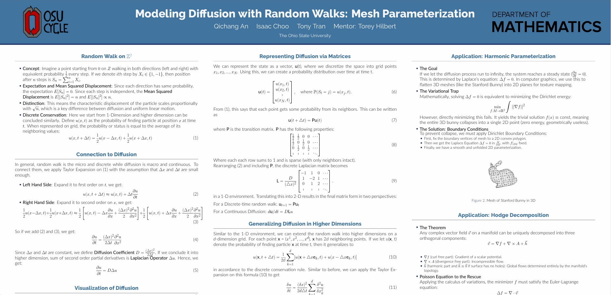
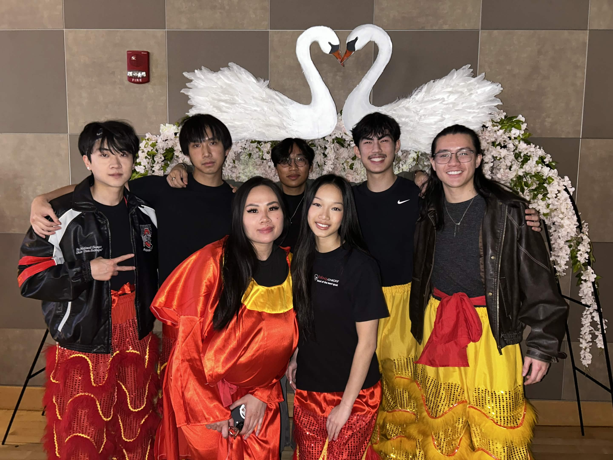
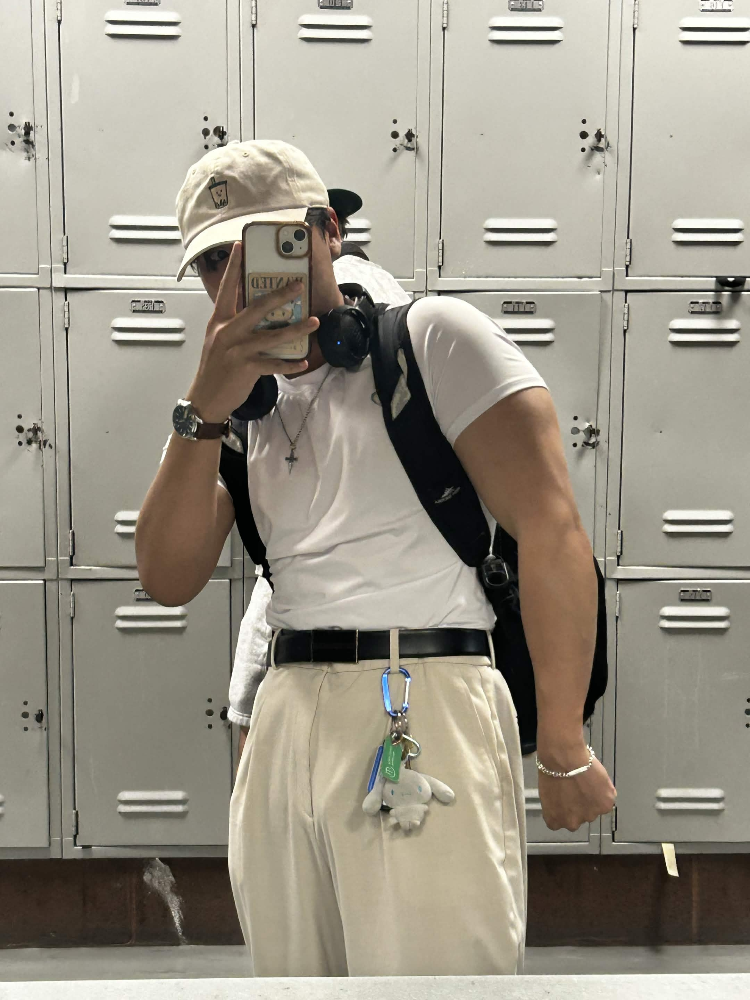
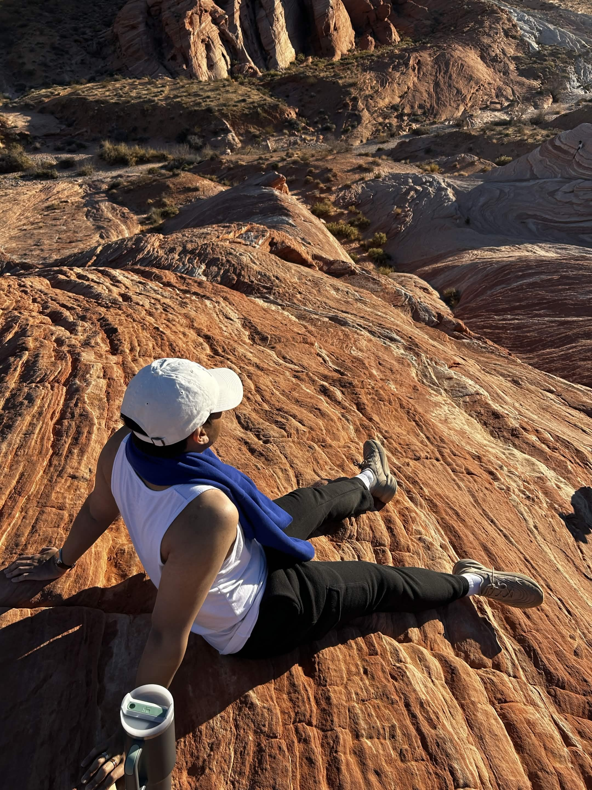
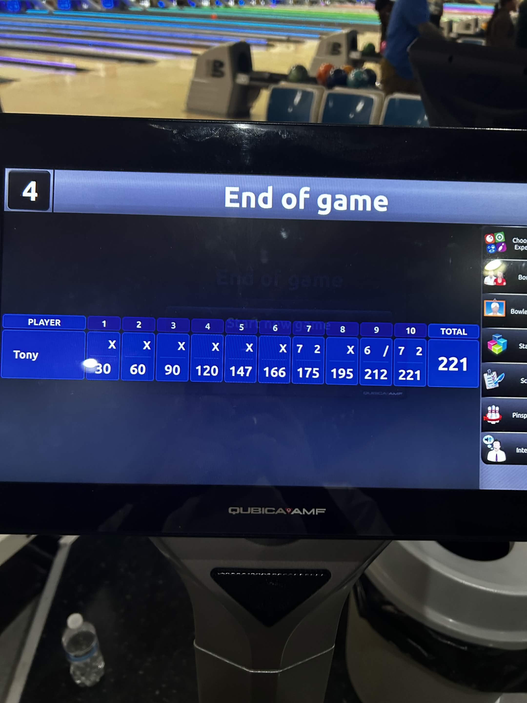
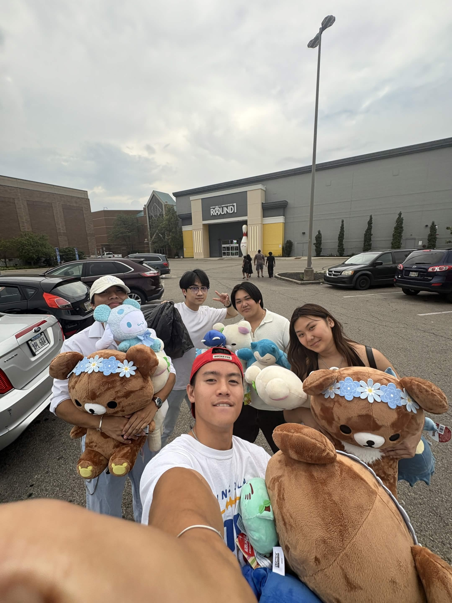

About Me
Data analyst, researcher, lion dancer - a little bit of everything.
I'm a recent graduate from The Ohio State University with a background in Data Analytics
and a specialization in Computational Analytics. I'm interested in using analytics,
visualization, and machine learning to solve real-world problems and support data-driven
decision making.
Currently seeking opportunities in data analytics and data science where I can continue
developing technical skills while contributing to impactful projects.
Throughout my academic and extracurricular experience, I've worked on projects involving
predictive analysis, data visualization, artificial intelligence, and statistical modeling.
I volunteered with the Union of Vietnamese Student Associations across the Midwest, where
I supported analytics initiatives and collaborated on data-driven projects and web
development efforts.

Undergraduate Research
I participated in undergraduate research focused on modeling diffusion through random walks
and reaction-diffusion systems. This experience strengthened my understanding of
probability, modeling, and computational problem-solving.

Lion Dancing
I'm a Lion Dancer and Coach. Our team performs every Chinese New Year for Ohio State's
APIDA culture show as well as for Linh Son Pagoda. Although it can be very physically
demanding, the bond I've formed with my community and teammates has only deepened my
love for it.

Hobbies
Besides that, I also enjoy exercising, traveling, bowling, and hanging out with friends!



